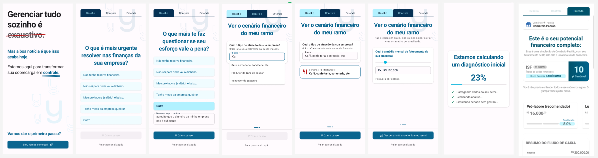

yampa 2.0
| Nesse projeto descrevo a trajetória do processo de discovery e entrega de uma plataforma unificadora da operação. | |
| Web Design | |
| Product DesignerUI/UX |
{kind=link}
Feitos Realizados
- Reformulação completa do onboarding do zero, resolvendo problemas críticos de usabilidade identificados em testes com usuários.
- Criação da arquitetura de navegação por "Áreas de Atuação" (Controle, Monitore, Entenda, Execute), alinhada com a jornada mental do usuário — não com estrutura técnica de ERP.
- Concepção e desenvolvimento de dois agentes de IA (Yago e Yana) com personalities distintas, funcionando como "assistente financeiro" e "consultora estratégica".
- Implementação do sistema de permissões granulares, permitindo delegação segura de tarefas em pequenas empresas.
- Estruturação de ciclos trimestrais de pesquisa (Discovery Q1-Q4 2025) com metodologia reprodutível — incluindo entrevistas, testes de usabilidade, enquetes e síntese por IA.
- Design do "Importador Universal de Dados" — funcionalidade que ingere cualquier arquivo (PDF, Excel, imagem) e classifica automaticamente via IA.
Panorama do projeto:
Produto: Yampa App — plataforma de gestão e análise financeira para PMEs brasileiras.
Minha função: Product Designer (end-to-end).
Contexto:
O Yampa é uma plataforma de gestão e análise financeira para pequenas e médias empresas brasileiras. Ao longo de 2023 a 2026, o produto evoluiu de um sistema de controle financeiro tradicional para uma plataforma de transformação financeira — um sistema que não apenas organiza dados, mas entrega inteligência de decisão para empresário que, em sua maioria, não têm formação contábil e operavam no "achismo".
Essa evolução só foi possível porque houve uma estrutura de pesquisa e design por trás de cada decisão. Não estamos falando de melhorias incrementais — estamos falando de uma reformulação completa da arquitetura de navegação, da criação de agentes de IA com personalidades específicas, e de um novo modelo de diagnóstico financeiro (ISF 2.0) que contextualiza a saúde do negócio para cada usuário.
Período de atuação: 2023-2026
Definição do problema:
Problema Central
Pequenos empresários no Brasil não conseguem entender suas próprias finanças. O problema não é só "falta de dados" — é falta de consciência financeira. A maioria opera no "achismo" e tem medo dos números.
Dores Identificadas em Pesquisa
- Onboarding confuso — Usuários não entendiam a navegação, terminologia era ambígua.
"Eu fiquei perdida. Meu Deus, o que que é isso?" — Larissa, beta tester
- Tempo excessivo em lançamentos manuais — Quem tem múltiplos bancos não Conseguia Manter o sistema atualizado.
"Principal dor é o gasto de tempo com os lançamentos manuais. Faço controle manual de 5 bancos." — Thays Helena
- Falta de contexto no diagnóstico — O ISF (Índice de Saúde Financiera) era uma nota isolada, sem path de melhoria.
"Várias pessoas perguntam o motivo da nota, querem mais informação." — Lauren
- Impossibilidade de delegar — Empresas não Conseguiam dar acesso limitado para funcionários.
{kind=link}

Desafios:
Desafio 1: Traduzir complexidade financeira para linguagem simples
O público-alvo não tem formação financeira. Cada decisão de design precisava ser validada com usuários reais — não assumir baseado em achismo.
Abordagem: "Teste do Sem Manual" — critério de usabilidade onde o usuário deve conseguir sair do cadastro e Chegar ao primeiro dashboard guiado apenas pelo sistema, sem suporte humano.
Desafio 2: Criar arquitetura que refletisse o Método Yampa
ERPs são organizados por módulo (contas a pagar, contas a receber, estoque...). O Yampa precisava de um modelo que fizesse sentido para alguém que não Entende de contabilidade.
Abordagem: Navegação por "Áreas de Atuação" — Controle (onde o caos vira dados), Monitore (acompanhamento diário), Entenda (diagnóstico), Execute (ação).
Desafio 3: Escalar pesquisa sem perder qualidade
Entrevistas em profundidade levam horas para analizar. Como transformer insights em ações sem gargalo na análise?
Abordagem: Infraestrutura de ResearchOps — transcrição automatizada (FasterWhisper), análise por LLMs, repositório centralizado (Obsidian), roteiros padronizados.
Desafio 4: Design de agentes com "personalidade"
IA não é só recurso técnico — é experiência do usuário. Como criar um agente que soa como um consultor financeiro amigável, não um robô?
Abordagem: Definição de personalidades específicas para cada agente (Yago = operacional/guardião; Yana = estratégico/consultor), com tom de voz documentado no Brandbook.
{kind=link}
Métricas:
Quais metricas guiaram meu trabalho:
- Taxa de conclusão do onboarding — Usuário Conseguiu chegar ao primeiro dashboard?
- Tempo para primeiro insight — Em menos de 10 segundos, o usuário Entende se teve lucro ou prejuízo?
- Tempo semanal no sistema — meta: menos de 15 minutos por semana para manter o controle em dia (pós-setup inicial).
- Net Promoter Score (NPS) — Usuários Recomendariam o Yampa?
- Índice de uso de funcionalidades proativas — Usuários interagem com os agentes de IA? Usam os alertas?
Métricas do Produto:
- +3.000 empresas clientes ativas em todo o Brasil.
- +28.000 empresários impactados pela clareza das informações.
- Redução de tickets de suporte por dúvida de navegação (pós-novo onboarding).
Processo de Design:
Fase 1: Discovery (Pesquisa)
O que faço:
- Análise de mercado e concorrência (desk research).
- Entrevistas em profundidade (5-10 usuários por ciclo).
- Testes de usabilidade com MVP.
- Enquetes para validação quantitativa.
Frameworks utilizados:
- Jobs to be Done (JTBD) — Entender o "job/tarefa" que o usuário contrata o produto para fazer.
- Jobs Stories — Quem / O Que / Por Que.
- Three-Column Assessment — Problema, Solução, Resultado Desejado.
Ferramentas:
- Roteiros semiestruturados.
- Transcrição automática (FasterWhisper + LLMs para resumos).
Fase 2: Síntese
O que faço:
- Codificação de padrões (análise temática).
- Matriz de priorização (RICE, MoSCoW).
- Consolidação em PRD com critérios de aceitação claros.
Entregável:
- PRD (Product Requirements Document) com validação metodológica.
- FRD (Functional Requirements Document).
Fase 3: Ideação
O que faço:
- Brainstorming com Product e Tecnologia.
- Mapeamento de solução baseada em evidências.
- Definição de arquitetura de informação.
Fase 4: Validação
O que faço:
- Testes de usabilidade com protótipo Figma/vibecode.
- Feedback iterativo.
- Ajustes antes do desenvolvimento.
Fase 5: Construção (Vibe Coding)
O que faço:
Quando a solução validada exige ajustes pontuais no front-end, utilizo vibe coding para entregar código diretamente — sem gargalo com a squad de desenvolvimento.
- Geração de código via LLMs (Claude, Gemini) a partir de especificações do PRD.
- Iteração rápida com o modelo até o código atender aos critérios de aceitação.
- Criação de PRs direto no repositório (GitHub) para revisão e merge.
- Colaboração com devs para ajustes finos ou dúvidas técnicas.
Por que isso funciona:
- Designer que cria código entende melhor as limitações técnicas — proposals mais realistas.
- Reduz dependência externa para mudanças visuais pequenas.
- Ciclo de feedback curto entre validação e lançamento.
Fase 6: Lançamento e Aprendizado
O que faço:
- Monitoramento de métricas pós-lançamento.
- Coleta de feedback contínuo.
- Início do próximo ciclo de pesquisa.
Conclusão
Impacto do Trabalho:
O Yampa evoluiu de um sistema de controle financeiro para uma plataforma de transformação financeira. Esse caminho só foi possível porque houve uma estrutura de pesquisa e design por trás de cada decisão — e uma entrega que vai além do diagnóstico, incluindo código como extensão do processo criativo.
O que me define como Product Designer:
- Empatia aplicada — Não assumo, pergunto. Cada decisão passa pelo crivo da pesquisa com usuários reais.
- Síntese em ação — Transformo volumes de feedback qualitativo em decisões concretas de produto.
- Frameworks com flexibilidade — Aplico metodologias (JTBD, Jobs Stories, RICE) com adaptação ao contexto, não como fórmula rígida.
- Comunicação multi-expertise — Traduzo entre usuário (linguagem simples), tecnologia (PRD técnico) e negócio (proposta de valor).
- Ownership — Não espero requisitos prontos. Busco ativamente problemas para resolver e oportunidades para capturar.
- Código como ferramenta — Utilizo vibe coding para entregar valor diretamente, reduzindo gargalos. Designer que cria código entende melhor as limitações técnicas e entrega proposals mais realistas.